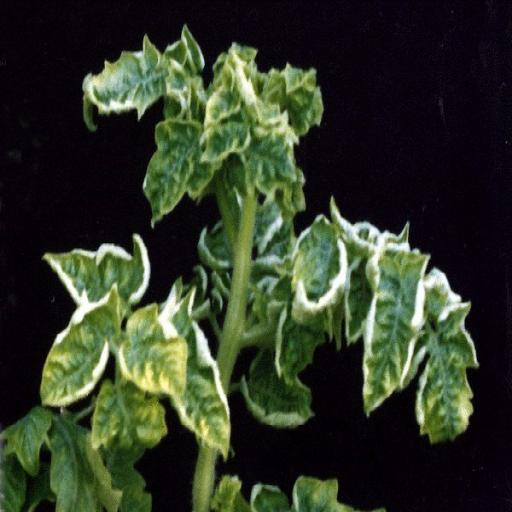

Rhizoctonia Solani in Tomato
Quick facts
- Rhizoctonia Solani is a soil-borne fungal disease affecting tomato plants.
- It primarily affects the roots, stems, and lower leaves of the plant.
- Infected plants may show damping-off, root rot, and stem cankers.
Pesticides
- SAAF Fungicide.
- Indofil M45 Fungicide.
- Antracol Fungicide.
- Nativo Fungicide.
- Amistar Top Fungicide.
Identification
- Early symptoms include brown lesions on stems and lower leaves.
- The fungus can cause damping-off in seedlings and root rot in mature plants.
- Infected plants may wilt during the day but recover at night.
- Severe infections can lead to plant death.
- The fungus thrives in warm, moist soil conditions.

Biology
- Rhizoctonia Solani is a soil-borne fungus.
- The fungus survives in soil and plant debris for long periods.
- It spreads through soil, water, and infected plant material.
- The fungus attacks plants at the soil line, causing stem and root rot.
- Warm, wet conditions favor the growth of Rhizoctonia Solani.
- The fungus can infect a wide range of host plants.
- Symptoms can appear at any stage of plant development.
- The fungus can spread rapidly in dense planting conditions.

Managing Rhizoctonia Solani
Resistant varieties
- Planting resistant tomato varieties can reduce the risk of infection.
- Resistant varieties can limit the impact of the disease.
- Ensure proper drainage to prevent waterlogging in the soil.
- Avoid overwatering to reduce favorable conditions for the fungus.
- Rotate crops to break the disease cycle.
- Avoid planting tomatoes in the same area year after year.
- Maintain good air circulation to reduce humidity levels.
- Remove and destroy infected plants to prevent further spread.
- Use clean, sterilized tools to minimize contamination.
- Sanitize tools and equipment between uses.
- Prune infected parts of the plant to slow disease progression.
Cultural controls
Physical controls
